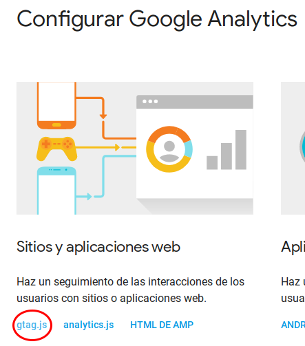

Píxel de seguimiento
En este post voy a mostrar como agregar un píxel de Facebook y Google Analitycs a nuestro sitio web.
¿Qué son y para qué sirven los píxeles de seguimiento?
Los píxeles de seguimiento son una herramienta de análisis con la que podemos medir la eficacia de nuestras publicacines y entender las acciones que las personas realizan en nuestro sitio web.
Agregando píxel de Facebook
Agregar el píxel de facebook a nuestra web es relativamente sencillo, basta con seguir los pasos que están en la propia documentación de facebook. Aquí les mostraremos ese paso a paso.

1) Vamos a la pestaña píxeles del administrador de anuncios, hacemos click en crear píxel e inmediatamente nos pide asignarle un nombre identificador, en este caso nuestro píxel se llama bitson.

2) A continuación ingresamos a las configuraciones del píxel y hacemos click en "Instala el código manualmente".

3) En este momento nos muestra la pantalla con los pasos para terminar la configración. Seleccionamos el código que nos brinda la configuración y lo pegamos en el encabezado de nuestras páginas, a las que le haremos seguimiento.

Agregando píxel de Google Analytics
Para agregar este píxel debemos ingresar a Google Analytics aquí encontraremos las diferentes opciones de configuración que nos brinda esta herramienta, debemos elegir la opción de Configurar Google Analytics.

Cuando accedemos con esta opción, acontinuación nos muestra que configuración esta disponible para ser usada. En nuestro caso vamos a usar la opción gtag.js.

Luego de esto, vamos a copiar el siguiente código, este fragmento que copiamos debe ser insertado después de la etiquet <head></head> en todas las páginas de nuestro sitio web.

Esto es todo lo que necesitamos para realizar el seguimiento en nuestros sitios, controlando publicaciones e interacciones de nuestros visitantes, solo necesitamos hacer uso del código que nos brinda Facebook y Google Analytics.
Comentarios
Comments powered by Disqus